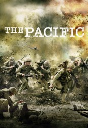

")
 
 IMDB-Wertung: 8.3 / 10
IMDB-Wertung: 8.3 / 10  Metascore:
Metascore: 
Im Dezember 1941 überfällt Japan den Stützpunkt der US-Pazifikflotte auf Pearl Harbor. Als Reaktion treten die USA aktiv in den Zweiten Weltkrieg ein. "The Pacific" basiert auf den Memoiren der Kriegsveteranen Eugene Sledge, Robert Leckie und John Basilone, die an den Kämpfen gegen das japanische Kaiserreich beteiligt waren. Der Weg der Marines führt von den Dschungeln bei Guadalcanal über die schwarzen Strände von Iwo Jima bis zu den Schlachtfeldern von Okinawa ...
Jahr: 2010
Dauer: 52 Minuten
FSK:
Land: USA Studio: HBOTonspuren:
Untertitel:
Auflösung: 720p (1280x720) Größe: 1392 MB
Genre: Action, Drama, Abenteuer, Krieg, Geschichte, TV-Serie
Regisseur: Jeremy Podeswa, Timothy Van Patten, David Nutter,  Carl Franklin, Tony To, Graham Yost
Carl Franklin, Tony To, Graham Yost
Drehbuch: Scott Kosar
Soundtrack:
Darsteller:
 James Badge Dale als PFC Robert Leckie
James Badge Dale als PFC Robert Leckie Joseph Mazzello als PFC Eugene Sledge
Joseph Mazzello als PFC Eugene Sledge Jon Seda als Sgt. John Basilone
Jon Seda als Sgt. John Basilone Ashton Holmes als PFC Sidney Phillips
Ashton Holmes als PFC Sidney Phillips Josh Helman als PFC Lew 'Chuckler' Juergens
Josh Helman als PFC Lew 'Chuckler' Juergens Rami Malek als PFC Merriell 'Snafu' Shelton
Rami Malek als PFC Merriell 'Snafu' Shelton Martin McCann als Cpl. R.V. Burgin
Martin McCann als Cpl. R.V. Burgin Tom Hanks als Narrator
Tom Hanks als Narrator Jacob Pitts als PFC Bill 'Hoosier' Smith
Jacob Pitts als PFC Bill 'Hoosier' Smith Brendan Fletcher als PFC Bill Leyden
Brendan Fletcher als PFC Bill Leyden Tom Budge als PFC Ronnie Gibson
Tom Budge als PFC Ronnie Gibson Conor O'Farrell als Dr. Sledge
Conor O'Farrell als Dr. Sledge William Sadler als Lt Col. Lewis 'Chesty' Puller
William Sadler als Lt Col. Lewis 'Chesty' Puller Henry Nixon als 2nd Lt. Hugh Corrigan
Henry Nixon als 2nd Lt. Hugh Corrigan Gary Sweet als Sgt. Elmo 'Gunny' Haney
Gary Sweet als Sgt. Elmo 'Gunny' Haney Jon Bernthal als Sgt. Manuel Rodriguez
Jon Bernthal als Sgt. Manuel Rodriguez Caroline Dhavernas als Vera Keller
Caroline Dhavernas als Vera Keller Annie Parisse als Lena Basilone
Annie Parisse als Lena Basilone James Gaylyn als Tee
James Gaylyn als Tee Chris Haywood als John Leckie
Chris Haywood als John Leckie Joshua Close als Edward Sledge
Joshua Close als Edward Sledge Yutaka Izumihara als Japanese Soldier
Yutaka Izumihara als Japanese Soldier Bob Rumnock als Al, the waiter
Bob Rumnock als Al, the waiter Betty Buckley als Marion Leckie
Betty Buckley als Marion Leckie Noel Fisher als Pvt. Hamm
Noel Fisher als Pvt. Hamm Nate Corddry als Pvt. 'Loudmouth'
Nate Corddry als Pvt. 'Loudmouth' Matt Craven als Dr. Grant
Matt Craven als Dr. Grant Ian Bliss als Capt. Le Francois
Ian Bliss als Capt. Le Francois Brandon Keener als Charles Dunworthy
Brandon Keener als Charles Dunworthy Shingo Usami als Defiant Japanese Prisoner
Shingo Usami als Defiant Japanese PrisonerDatei: X:\HD-Serien\Pacific S01\The Pacific S01E01 Guadalcanal.mkv seit 11.10.2016
Festplatte: HD Serien(I-ST)
 Es gibt insgesamt 182 Filme in der Gruppe 'HD-Serien'
Es gibt insgesamt 182 Filme in der Gruppe 'HD-Serien'